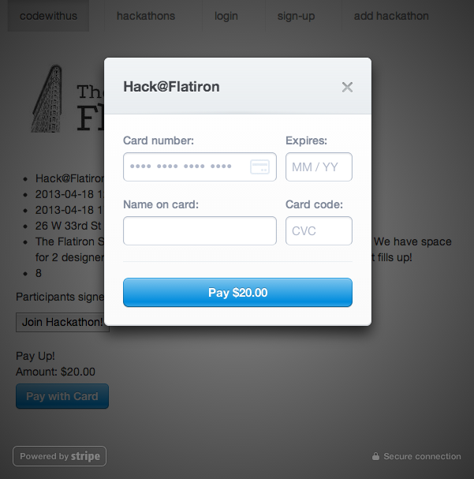

This is (hopefully) part 1 of a muli-part series of blog posts about Stripe
Incorporating a payment system into a web application has been an aspiration of mine for some time now. I kept putting it off because it seemed too daunting - the programming equivilant of climbing Mt. Everest. This weekend, however, a few flatiron students and I built an app called CodeWithUs. The idea is to allow people to post hackathons, and then get the right mix of people to attend them. We finished the data modeling and authentication on Saturday, and then took Sunday to fill in some of the views. Once the views started looking pretty good, Christina and I decided to integrate Stripe so that users could pay for a ticket to a hackathon.
We choose Stripe because we heard it was the easiest API for developers. This seemed like the perfect way to build our fist payment system! I first made a Stripe account - which took all of 2 minutes. Then we started looking at the excellent documentation and found a tutorial for Stripe Checkout using Ruby on Rails.
1
The Checkout makes it even easier to integrate Stripe directly into your website. We'll take care of building and styling credit card inputs, validation, error handling, and sending the encrypted card number securely to Stripe.
We followed the tutorial, but had to make some slight modifications sine we were incorporating this into an existing application.
We copied the suggested ‘new’ and ‘create’ actions from Stripe into our charges controller.
12345678910111213141516171819202122232425262728
class ChargesController < ApplicationController
def new
end
def create
# Amount in cents
@amount = 500
customer = Stripe::Customer.create(
:email => 'example@stripe.com',
:card => params[:stripeToken]
)
charge = Stripe::Charge.create(
:customer => customer.id,
:amount => @amount,
:description => 'Rails Stripe customer',
:currency => 'usd'
)
rescue Stripe::CardError => e
flash[:error] = e.message
redirect_to charges_path
end
end
Then we added a resource for charges to our routes file, which will give us all the standard routes we need.
1
resources :charges
At this point we created a new file called stripe.rb in the config/initializers folder. We were supposed to store our passwords safely, but Figaro, the Gem we were using to do this, was causing issues, so we temporarily hard coded the keys in.
This is where we started to venture off the beaten path and go our own way. The tutorial wanted us to create html.erb files for the overall layout, and for the ‘new’ and ‘create’ actions. We already had a layout, and for the sake of getting this to work, we just appended the charges#new functionality into the hacakthon show page. We also were able to dynamically set the price in Stripe based on which hacakthon page the user was on.
At this point we were able to have our users click on ‘pay with card’, enter their credit card information, and actually buy a ticket to our hackathon!

This brings us basically to base camp one territory. We can’t actually accept real credit cards still, we are not capturing any information about our customers, and we can only do these transactions as a javascript popup. There is still a long way to go to the top of Mt. Stripe, but getting there was still a huge accomplishment!
When doing Project Euler problem #14 I was running into a problem.
12345678910111213
The following iterative sequence is defined for the set of positive integers:
n n/2 (n is even)
n 3n + 1 (n is odd)
Using the rule above and starting with 13, we generate the following sequence:
13 40 20 10 5 16 8 4 2 1
It can be seen that this sequence (starting at 13 and finishing at 1) contains 10 terms. Although it has not been proved yet (Collatz Problem), it is thought that all starting numbers finish at 1.
Which starting number, under one million, produces the longest chain?
NOTE: Once the chain starts the terms are allowed to go above one million.
I started out by writing a method that took a number and returned the length of its Collatz sequence.
I was pretty sure the logic was correct, but when I ran it on a random number it generated a strange error.
1
privatemethod`collatz' called for 12:Fixnum (NoMethodError)
I tried a bunch of different approaches to solve this, but none of them were working. I eventually realized that my method needed to be part of a class. I made a new class called Collatz and made each number a new instance of that class. After half an hour of nothing but error messages I decided I needed a new approach.
Without an internet connection I couldn’t just google the problem, so I thought a bit more. It dawned on me that numbers are already objects (since everything in Ruby is an object) and that they are already part of the Fixnum class.
I’ve never modified a core Ruby class or ‘reopened’ a class before, but I did vaguely remember learning about this in a lecture a few weeks ago. So I decided to just reopen the Fixnum class and add this new method.
I tired it out on a test number and it worked! Victory! This is pretty basic stuff, but it’s always satisfying to get past a problem you are stuck on it for a while. All that was left was to iterate over the first million numbers and determine which one had the longest Collatz sequence.
The program I built determined correctly that out of the first million numbers - 837,799 has the longest Collatz sequence. My code could be optimized further - it takes a good minute to run now. That would involved determining which numbers I don’t need to iterate over - for instance it seems that even numbers generally (but not always) have longer sequences as you increase, and that odd numbers generally have longer sequences than even numbers.
I’ve been immersed in Rails for a few weeks now. It’s been great, but it has come at the expense of pushing ahead and learning more about Ruby. I decided to go back and do another Project Euler problem this week, but it was a bit too easy. Today I took on a more challenging problem, and spent all morning getting it to work.
I obviously needed to be able to access each value, and was pretty sure they had to be integers as I had plans to perform mathematical operations on them later on.
Rereading the instructions I determined there were four ways (horizontal, vertical, diagonal-right and diagonal-left) that combinations of numbers would be possible. Instead of trying to do this all at once and make one huge class with lots of sub methods, I decided that I would try each method one-by-one and if it produced the correct answer, I would stop.
3. Horizontal Combinations
This was the easiest, so I did it first.
First I tried to find the product of the first 4 numbers.
Then I figured out which product of all of these combinations was the greatest in value. As I went further down the rabbit hole I realized it would be helpful to encapsulate this logic into a method, which I did.
1234567891011121314
deffind_largest_product(array)start=0finish=3greatest=0untilfinish>19||finish>array.sizedo# I added the '|| finish > array.size' on the line above once I got to the diagonal lines and had to deal with arrays of varying size.sum=array[start..finish].reduce{|product,n|product*n}greatest=sumifsum>greateststart+=1finish+=1endgreatestend
At this point I decided to split my array into nested arrays, with each nested array containing a row of 20 numbers.
Once I had a nested array and a method to find the largest product, I then put the largest product of each row into a new array called answer, and then called the max method on that array to produce (what I hoped would be) the answer to the problem.
Unfortunately, this was not the answer, and I had to move on and see if the solution would be a vertical combination.
4. Vertical Combinations
I now needed to make arrays of the columns from my origonal grid. I realized that I could just ‘shift’ off the first element of each of the row arrays I had previously made, and combine them into a new nested array which contained all the columns of data.
Once I had this new array, I then see what the largest product of 4 adjacet vertical numbers were. I essentially reused the code I did when I did this for the rows of data, just replacing what array I was using. Looking back I could have put this into it’s own method too.
As with the horizontal combinations, this did not produce the correct answer. I knew that I was now venturing into more difficult territory with diagonals, but I was so invested in figuring out this problem that I was actually pretty excited.
5. Diagonal-Right Combinations
I tried to figure out what I needed to do in my head, but it wasn’t working. I went into excel and started visualizing it all, which was tremendously helpful.
I ended up determing that what I would do is make arrays of all the diagonals that went down and to the right. The green diagonals on the bottom-left and top-right represent the first and last array, since arrays beyond them would be less than 4 numbers in size. I figured if I started at the bottom-left most array and worked my way up to the top right most array, I would get all the diagonals in one fell swoop.
After some trial-and-error I was able to come up with a way to get all the numbers from a single diagonal line into an array, and then enapsulated it in a method called make_diagonal_array
Now that I could get a single diagonal array, I had to get all of them. I made a new array called diagonal, and shoveled each diagonal line onto it, again going from the bottom left most diagonal line to the top right most diagonal line. I used some of the same local varaible names that I used in the make_diagonal_array, which I call in the until loop. While this is a bit confusing, it was the least confusing way I could come up with at the time.
I suppose this was just my lucky day, since this did not produce the right answer. I then went on to try to final set of combiations: diagonal-left.
6. Diagonal-Left
For this step all I had to do was modify the code I made for diagonal-right. This time I would start at the top-left most diagonal and go down to the bottom-right most diagonal. This was suprisingly hard to wrap my head around, but I eventually did with enough fiddling.
FINALLY!! I got the answer (it’s 70,600,674). This was quite a lot of work, but well worth it. If I were to do some serious refactoring, I could put this all into a class, further encapsulate these methods, and make it all work nicely as one program instead of 4 separate attempts. Perhaps another time though - I need to enjoy the rest of my Saturday!
A few days before I started the Flatiron School, Dave introduced me to Project Euler.
This is a website with hundreds of math problems that you need to solve by building a comptuer program. It is named after the 18th century Swiss mathemetician Leonhard Euler, who according to wikipedia is “one of the most prolific mathematicians ever”.
While there is some disagreement over how to pronounce Euler (some say ‘oil-er’, some say ‘you-ler’), there is a broad consensus that this is a great way to learn how to become a better programmer. However many people are intimidated by this website, since it involves math.
I’ve been going through these problems over the last few weeks and have a git repository of my work. I can say that yes it is a bit challenging, but that you learn so much that you should stop worrying, and just start doing the problems. I’ll take the problem I finished last night, and use it to show what I’ve been able to learn.
1234
Summation of primes
Problem 10
The sum of the primes below 10 is 2 + 3 + 5 + 7 = 17.
Find the sum of all the primes below two million.
1. You Get A Math Refresher
Instead of being intimidated by hard math concepts, just view it as an opportunity to hone your math skills! Math was always one of my favotite subjects in school because it made sense, and if I worked hard enough I could find a definitive answer. Perhaps I’m a bit unique in this, but doing math problems is really fun for me. For this problem, I had to jog my memory about prime numbers. I remembered that prime numbers were numbers greater than 1 that had no other factors besides 1 and itself. Not anything enlightening, but good to know I still remember middle school math concepts.
2. You Are Forced To Break Down Problems
I then realized I needed to break this problem down into many smaller problems. This has been one of the most critical skills I’ve developed while at the Flatiron School. If you are unable to take a big problem and break it down into smaller sub-problems, you won’t be able to do much of anything in programming. Project Euler has been one of the best resources I’ve found to practice doign this.
Here is how I broke down problem 10.
12
1. find all prime numbers under 2,000,000
2. take all these numbers and add them together
Once I started the first step I realized I could break it down further.
123
a. Find all the numbers under 2,000,000
b. Check if each one is prime
c. If it is prime, add it into an array
For the second step, I already knew that what I was doing (taking an array and adding it together) perfectly fit the pattern of reduce, and so didn’t need to further break it down. Avi should be proud that I’ve developed this kind of intuition.
3. You Learn How to Refactor
I ended up with some code that worked (the answer is 142,913,828,922), but was extremely slow
At this point, I let myself go on the internet and try to find a way to refactor. I stumbled upon the ruby prime guide and realized that the prime module had more functionality that I could use to speed up my program. Here is my new code that I made after doing that research:
It turns out that Prime is a class that is basically an array of every prime number. Since I am now only iterating over prime numbers as opposed to all numbers, my program went considerably faster - running in about half a minute as opposed to the several minutes it took to run the original.
Refactoring is a concept that some people get intimidated by, but by starting small and taking baby steps you can build up confidence to take on more challenging problems like refactoring huge controllers in rails.
So to all those on the fence about trying Project Euler - I say GO DO IT!
When I think of the term ‘inject’, I think of Ron Popeil’s Solid Flavor Injector - where you can literally put solid garlic cloves INTO a meat roast. Classy.
When I first came across Ruby’s method ‘Inject’ I was very confused. The point of inject is to get rid of local variables that iterate when you want to do something simple like sum up the first 10 numbers.
But what this ‘Inject’ method is really doing is reducing. Reducing a range of 10 numbers into just their one sum. Reducing the number of local variables you need to keep track of. Reducing the amount of code you need to write. This is why, even after I learned about inject, the name was still throwing me off. Then I discovered that ‘Reduce’ is actually an alias to ‘Inject’ in ruby! Thank you Matz for making me happy. I’ll be leaving the notion of injecting to Ron Popeil, and will write reduce methods in my code from now on.
I’ve been at the flatiron school for about 3 weeks now. I’ve been learning so much - it’s really incredible how much progress I’ve been able to make in such a short period of time. This is in no small part due to the ability of Avi and Bob to both engage is in lectures and help us one-on-one when we get stuck. Part of being engaging in lectures though, has lead to some rather interesting things being said. Last semester the class started a blog to keep track of such utterances. I’m proud to say our semester has not only kept up this tradition, but in just three weeks already surpassed the last class in terms of the number of blog posts!
When I was asked to present to NYC on Rails, I knew that I was limited in my knowledge of programming, and had limited time to prepare since I was spending all day in class and all night studying and doing homework. I was supposed to find a topic, research it, and make a presentation. However I was determined to build something, no matter how small. On the first day of class, Avi ripped up his prepared lecture notes and said ‘we push code from day one’ and had us make a commit to github.Curb. I came here to build things, and so build something I did.
Curb Your Flombaum takes a random quote from the blog the class keeps about Avi, calls up my phone, and speaks it back to me. Here is how I did it.
1. Use feedzirra to parse XML and grab a random quote
There are lots of XML parsers out there, but I choose to use feedzirra because it seemed simple and had decent documentation. First, I had to require the Feedzira, Twilio, and Amazon S3 gems
From there I could just select a random entry be calling .sample and get just the title element (omitting any comments made beyond just Avi’s quote). The code will look like this
1
feed.entries.sample.title.to_s
2. Convert the random quote to an xml file
I now have the code that will give me back a string of a random Avi quote, but I need to put it in an actual XML file. To do that I’m first setting a variable xml to a string. This string is in the TwiML format, which I learned about using twillo’s excellent documentation. Twilio will automatically play an mp3 file if you wrap the url for the file in a command. Similarly Twilio will turn any text you wrap in a command into speech. Notice that I’ve put a \ before the quotes inside this string. I’m doing this to escape the characters so that ruby doesn’t prematurely end my string.
Now that I have a dynamic variable for what an XML file would contain, I need to save it to my computer. Ruby’s official documentation made this task relatively easy.
123
File.open('call.xml','w+'){|f|f.putsxml}
4. Upload the file to Amazon S3
Each time I run the program, I now have a new file called ‘call.xml’ that is saved to my computer. Each time it will include a new random Avi quote. I now need to host this file on the internet in order for Twilio to be able to work. I tried a lot of different solutions, but ultimately Amazon S3 was what I went with. I made an account, created a ‘bucket’ to store my files, and then was able to write more code. First I had to put in my credentials
1234
AWS::S3::Base.establish_connection!(:access_key_id=>'SDF7FS7DFS202S2LKSDS',# <-- put in your own, this is a fake one:secret_access_key=>'ASFDHSADF23HSDFASDFJSSX722iaf28#sdfsdf2'# <-- put in your own, this is a fake one)
Amazon’s official documentation left out the ‘AWS::S3’ prefix, which I had to figure out on my own. I also just made a guess on how to make the file public (it’s private by default), so they could improve that part of the documentation as well.
5. Use Twilio to convert the text into speech and call my phone
Now that I have an XML file with a random Avi quote hosted on the internet, I need to configure Twilio to do it’s magic. First I set my my credentials
12
account_sid='JH96987LKJLKJLKJsadfasdf3323423sfasd'# <-- put in your own, this is a fake oneauth_token='98273234sdf2342309sd0f9s8fd980s3'# <-- put in your own, this is a fake one
Then I set up a client to talk to the Twilio REST API
Finally I give twilio instructions on what I want it to do. I want it to call my phone (the to:) using the phone number i have associated with the account (the from:) using the instructions in TwiML format I have hosted on S3 (the url:). At first this did not work, but I asked Twilio for help and they got back to me saying I needed to specify that this was a GET request (the method:).
123456
@call=@client.account.calls.create(:from=>'+12129983322',# <-- put in your own (must be the one linked to your twilio account), this is a fake one:to=>'+12123340076',# <-- put in whatever phone number you want to call, this is a fake one:url=>'https://s3.amazonaws.com/NYConRails/call.xml',# <-- put in your own, if you use S3 it will just be https://s3.amazonaws.com/YOUR_BUCKET_NAME/call.xml:method=>'GET')
In conclusion
So there is how I made Curb Your Flombaum. I have open sourced the project at github, and would love anyone to take this code and run with it. I have a lot of ideas for improving this app - maybe making the ability to sign up to get Avi quotes sent to your phone as they come in. However this was an MVP for a demo, and I’m proud to have done this after learning how to code for just three weeks.